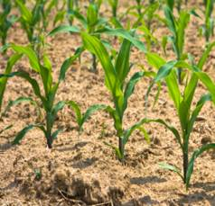

GPBR 112 :: Lecture 07 :: SEED PRODUCTION IN MAIZE

Maize is common millet of India with wider industrial and household utility. It is used a feed, food and raw material in soft drink industry. Botanically it is known as Zea mays and belongs to the family poaceae.
Floral biology
Botanical name : Zea mays
Chromosome number : 2n=20
Botanical Family : Poaceae
Inflorescence : Panicle cob, as the crop is monoceious in nature
Type of flowers : Female : Cob (axillary inflorescence in the middle
portion of plants)
Male : Tassel (terminal inflorescence)
Husk : Enlarged leaf sheaths from each node, forming a protective covering around the inflorescence.
Pollination : Cross pollination
Special character : Protandry
Flowering pattern : Top to bottom (Tassel) Bottom to top (Cob)
Anthesis : Pollen shedding begins 1 to 3 days before the silk emerge from the cob.
Fertilization : Within 12 to 18 hrs after silk emergence
The entire silk is receptive. Silk will be pinkish and sticky at the beginning (receptive) after fertilization it will be chocolate / brown colour.
No. of pollen in tassel : 2,50,00,000
Pollen viability : 12-18h
Silk receptive : 8-10 days
Male flower anthesis : 6.00 am to 8.00 a.m
Duration of flowering : 2-14 days
Tassel Cob
Husk Silk
Seed
Types and Methods of seed production in maize
In maize, open pollinated varieties, synthetics, composites and hybrids are available.
- Open pollinated varieties
Raise the varieties under isolation of 400 m in foundation seed stage and 200 m in certified seed stage and allow the plants to openly pollinate among themselves and set seed.
- Synthetics
In cross pollinated species, a variety obtained by in mating in all possible combinations, a number of lines (>5) that combine well with each other. COBC 1 (Baby corn).
- Composite varieties
These are produced by open pollination among a number of outstanding strains usually not selected for combining ability with each other e.g. K1, Jawahar, Vikram, Sona, Amber, CO 1 and Kisan.
d. Inbreds
It is relatively true breeding strain resulting from repeated selfing (5 times.)
Varietal seed production technique
Open pollination under isolation is the common method of varietal seed production.
Stages of seed multiplication
In maize seed (varieties composites and synthetics) is multiplied adopting three generation system, as breeder seed, foundation seed and certified seed as the crop is highly cross pollinated crop , where the chances for genetic contamination is high.
Popular varieties
In Tamil Nadu, CO1, K1, COH3, COH4, are the popular varieties for grain purpose, while African tall is a fodder maize.COBC1 is a variety identified for salad purpose.
Season
The best season for production is June - July, November- December and
January – February and the flowering should not coincide either with rain or high RH and the maturation should coincide with dry weather. The temperature of 37°C is favourable for better seed setting.
Land requirement
The land required for open pollinated variety, composites and synthetics should be fertile and problem soils will lead to low pollen fertility and will adversely affect the quality and the seed set will be poor. The previous crop should not be the same crop to avoid the occurrence of volunteer plants and if to be the same crop it has to be the same variety and should be certified and has to be accepted for certification. The field should not have any volunteer plants.
Isolation distance and Modification of isolation distance
- Composite, Synthetics and OPV = (FS:CS 400 : 200 m)
Differential blooming dates are permitted for modifying isolation distance provided 5.0% or more of the plants in the seed parent do not have receptive silks when more than 0.50% of plants in the adjacent field (s) within the isolation distance are shedding pollen.
Distances less than 200 meters may be modified by planting border rows of male parent, if the kernel colour and the texture of the contaminant are the same as that of seed parent. The number of border rows shall be determined by the size of the field and isolation distance from the contaminant.
Selection of Seed
For production of foundation seed, breeder seed is used as the base material, while for certified seed, foundation seed should be used as the base material. The seed used should be from authenticated source with tag and bill. The required seed rate will be 20kg /ha or 8kg/ acre.
Pre sowing seed treatment
The seeds are given with any one of the seed treatment or in combination. Seeds are soaked in 2% KH2PO4 for 16h with a seed to solution ratio of 1:0.06 and are dried back to their original moisture content of 8-9% .This management could be used both for dryland agriculture as well as gardenland.
Seeds are also treated with 5% carbofuran 3G to protect the seed from shoofly infection. Seed treatment with chlorpyriphos @4 ml /kg is also recommended against the attack by shootfly.
Seeds are dry dressed with bavistin @2g/kg of seed to protect against seed borne pathogens and soil borne pathogen.
Seeds are also treated with azospirillum @50g/kg of seed to fix atmospheric N. Any one of these treatment or combination of treatment is adopted for better productivity.
Seeds are also treated with polycoat @ 3g/kg of seed diluted in 5ml of water to invigourate the seed towards better marketability and production. Pink coloured polycoat performed better than other colour polymers. On adoption of sequence of treatment physiological should be followed with physical seed treatment.
Sowing
The seed are sown at a spacing of 45 x 10 cm or 60 x 20 cm at a depth of 2-4 cm based on the specific features of the variety. Nursery production will not be suited to this crop. In the main field seeds are sown either in ridges and furrows or under beds and channels. The seedlings are thinned and gap filled should be done 7-8 days after sowing.
Plant spacing Row spacing

Seed rate
Varieties : 20 kg /ha
Nutrient application
At last ploughing apply 12.5 tonnes of compost per hectare
Fertilizers(varieties) 150:75:75
- Basal 40:75:40 NPK kg/ha
- 1st top 20 DAS 50:0 :0 kg/ha
- 2nd top 40 DAS 60:0:35 kg/ha.
Micronutrients
2% DAP is sprayed at 50% flowering stage to enhance uniform flowering and increased seed set
If Zn deficiency is found apply 20 kg of zinc sulphate / ha.
If Fe deficiency is found apply 12.5 kg /ha micronutrient mixture
- The crop is mostly affected by micronutrient deficiencies by N,P,Mg,Mn,Zn,Fe and K. Apply 12.5kg of micro nutrients in furrows and the mixture in the soil.
Weeding
Application of atrazine @ 500g per ha as pre-emergence herbicide control the growth of weeds upto 20-25 days.(If pulses is used as intercrop do not use atrazine) One hand weeding at 17-18 days after sowing keep the field free of weeds.Weeding after boot leaf stage is not economical and shade will also minimize the weed flora . On organic production, 2 hand weeding at seedling stage and other at boot leaf formation will keep the field weed free.
Irrigation
The crop should be irrigated once in 10-15days for enhanced seed set and formation of bolder grains. The critical stages of irrigation are primordial initiation stage, vegetative stage , flowering, milky and maturation stage. If the irrigation is withheld in these stages seed set will be poor and seed size will be reduced.
Pest and disease management
Shoot fly |
Monocrotophos 0.03% |
Stem borer |
Rogar 0.3% / Carbaryl 50 WP 1kg.per heactre on 20th day |
Lesion nematodes |
Carbofuran 3 G@30kg./ha.in seed holes at the time |
Downy mildew |
Mancozeb @ 1kg/ha. |
Leaf spot |
Mancozeb or captan @ 1kg/ha |
Cob borer |
Apply carbaryl 10% dust @ 25kg/ha. At milky stage repeat it 15 days thereafter.(50 lts. Spray fluid per ha) |
Roguing
It is specific to seed crop and is done from seedling stage to harvesting stage based on the phenotypic characters. Off types can be identified through stem colour,plant structure, number of leaves ,auricles, nodal colour, tassel colour,sheath colour ,grain colour etc. The field standard for seed crop is as follows
Seed Certification
Number of Inspections
A minimum of two inspections shall be made at flowering and another during flowering.
Field Standards
General: Maize field should be isolated from contaminants as follows
Contaminants |
Minimum distance(meters) |
|
Foundation stage |
Certified stage |
|
Fields of other varieties |
400 |
200 |
Fields of same variety not confirming to varietal |
400 |
200 |
In maize hybrid alone increasing the border row and minimising the isolation is permitted
Specific standard: These are verified at the final inspection
Factor |
Maximum permitted (%) |
|
FS |
CS |
|
Off types plants that have shed are or shedding pollen at anyone of the inspections during flowering when 5%or more of the plants in the seed field have receptive silks . |
1.0 |
1.0 |
Preharvest sanitation spray
Spraying of endosulphan @ 0.07% and bavistin@10g /lit 10 days prior to harvest prevent the seed weevil ( Sitophilus oryzae) infestation at storage.
Seed maturation
•14-20 DAA milky stages (starch in fluid stage)
• 35 DAA : Soft dough stage
• 45 DAA : Glazad dough stage
• 55 DAA : Ripe dough stage
Symptom of Physiological maturation
- Cob sheath turn straw yellow colour
- The funicular degeneration
- Formation of dunken layer
- Moisture content of seed 35%
Matured cob Dunken layer
Harvesting
The crop attains physiological maturity 30-35 days after 50% flowering and the seed moisture at this stage will be around 25-30%. The crop is harvested as cob harvesting when the sheath of cob dries and attains straw yellow color. The crop is harvested as once over harvest for seed purpose.
Dehusking
After harvest manually the sheath are removed, which is known as dehusking.
Cob sorting
Based on the kernel arrangements on the shank as irregular discoloured, diseased and ill filling the Cobs are sorted out and cobs with characteristic kernel colour and shank colour and regular row arrangements are selected for seed purpose. The kernel discolouration should not 10% for certification.
Zenia and metazenia
The discolouration in cobs may be due to disease infection or genetic contamination. The effect of foreign pollen on kernel colour is known as Zenia, metazenia effect which causes genetic contamination in the seed lot. Zenia is the effect of foreign pollen of same generation and metazenia is the effect of foreign pollen in next generation.
Shelling
The cobs are dried under sun and threshed with fliable stick for extraction of seeds the moisture content of seed at the time of threshing will be 15-18%.On large scale production cob shellers are used, but care should be given to avoid mechanical damage, which in turn will reduce the seed quality and storability.
Drying
The seeds are dried to 8 to10 % moisture content either under sun or adopting mechanical driers for long term storage as the seeds is orthodox in nature.
Processing
Mechanical grading can be done with cleaner cum grader, which will remove the undersized immature and chaffy seeds .The middle screen size should be 18/64” round perforated sieves. The size can vary depending on the variety from 14/64 to 20/64 inch round perforated sieves.
Seed treatment
The seeds are infested with several storage pests, to protect against these pests the seeds are given protective treatment with bavistin @2g/kg of seed with carbaryl @200mg/kg of seed as slurry treatment. Bifenthrin @5mg /kg of seed or diflubenzuran @ 200 ppm per kg of seed or imidachlopride @ 3 ml per kg of seed is also recommended for better seeds storage .
Seed packing
Seeds are packed in gunny bag for short term storage while in HDPE and polylined gunny bag for long term storage.
Storage
The treated seed can be stored up to 12 months provided the seeds are not infected with storage pests. Seed can be stored up to 3 years if the seeds are packed in moisture containers and are stored at low temperature .The godown should be kept clean as the possibility of secondary infestation with Trifolium (red flour weevil ) is much in these crop. The major problem in storage is incidence of grain weevil which will powder the seed material in a short period.
Seed yield: 3 to 4.0 tones
Seed standard
The processed seed should have the following seed quality characters both for certification and labeling.
A. Seed ears inspected after harvest shall not contains in excess of 1.0% of offtype ears including the ears with off-coloured kernels.
B. Shelling
Shelling of the seed ears is to be done after obtaining approval from the Certification Agency
Factor |
Standards for each class |
|
FOUNDATION |
CERTIFIED |
|
Pure seed ( maximum) |
98.0% |
98.0% |
Inertmatter(maximum) |
2.0% |
2.0% |
Other crop seed (maximum) |
5/kg |
10/kg |
Weed seed |
None |
None |
Other distinguishable varieties based on kernel colour and texture (max) |
10/kg (by |
20/kg (by number) |
Germination ( Minimum) |
90% |
90% |
Moisture (maximum) |
12.0% |
12.0% |
For vapour proof container (maximum) |
8.0% |
8.0% |
Mid storage correction
The seeds loose their quality during storage due to deterioration and pest infestation, when the germination falls below 5-10 % of the required standard the seeds are imposed with midstorage correction, where the seeds are soaked in double the volume of 10-4 M solution of potassium dihydrogen phosphate (3.6mg/lit of water) for 6 hours and the seeds are dried back to original moisture content (8-9%).
| Download this lecture as PDF here |